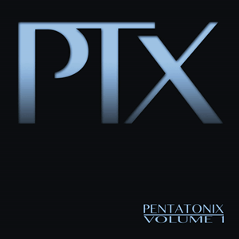
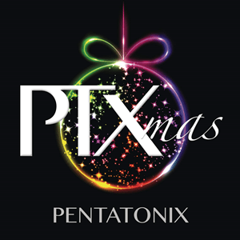
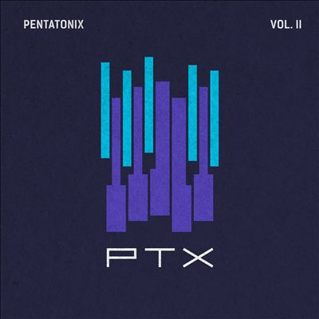
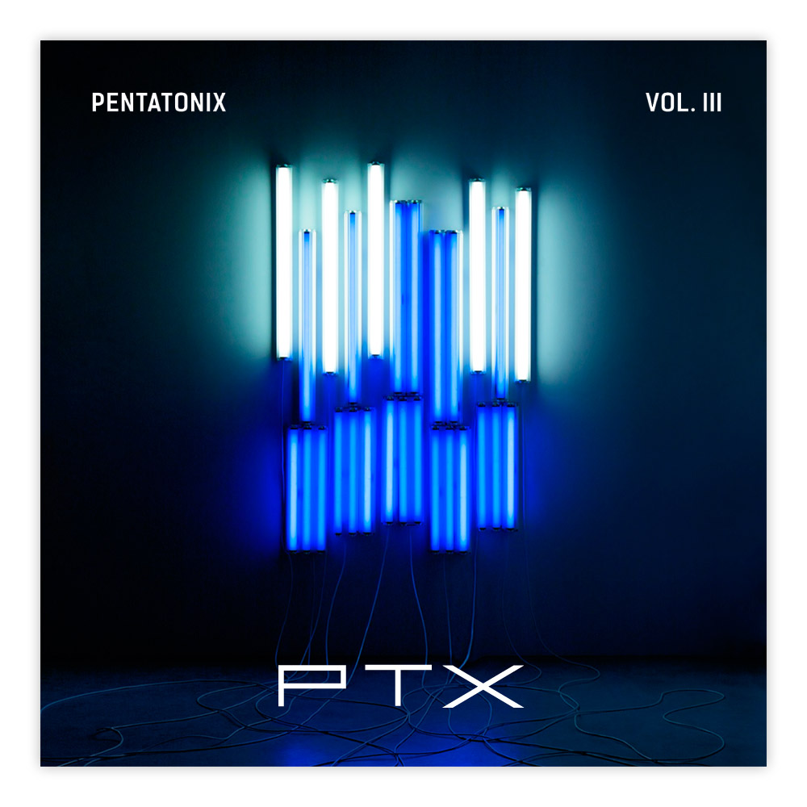
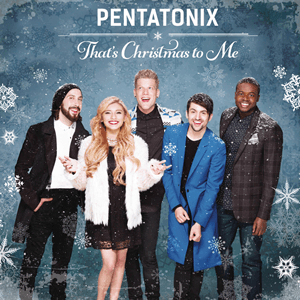
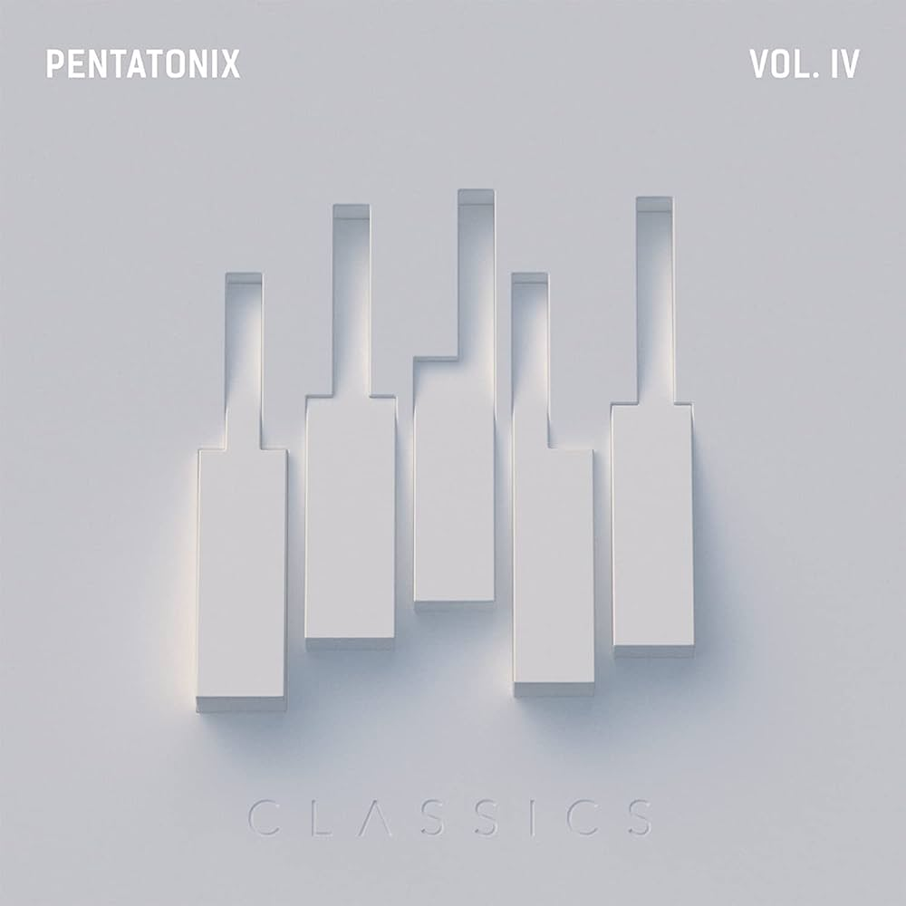
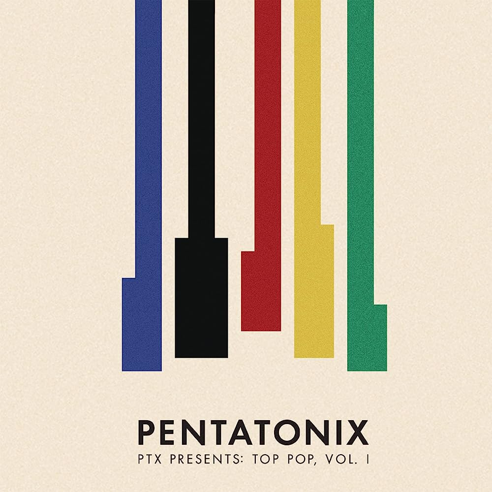
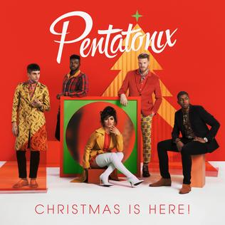
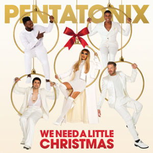
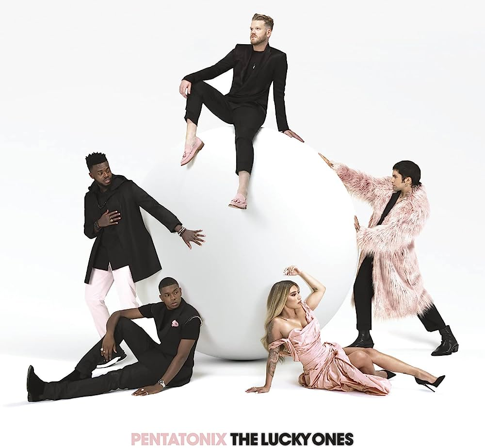

Discografia
PTX vol.1 (2012)
PTX Volume 1 é o EP de estreia do grupo a capella Pentatonix, lançado em Junho de 2012.
Tracks:
- "Starships"
- "The Baddest Girl"
- "Somebody That I Used To Know"
- "Aha!"
- "Show You How To Love"
- "Love You Long Time"
- "We Are Young"
PTXmas (2012)
PTXmas é o segundo EP do grupo estadunidense a capella Pentatonix, lançado em Novembro de 2012, composto por músicas natalinas. Uma versão Deluxe foi lançada no final do mesmo mês com 2 faixas extras.
Tracks:
- "Angels We Have Heard On High"
- "O Come, O Come Emmanuel"
- "Carol Of The Bells"
- "The Christmas Song"
- "O Holy Night"
- "This Christmas"
PTX vol.2 (2013)
PTX, Vol. II é o terceiro EP do grupo a capella estadunidense Pentatonix, lançado em Novembro de 2013.
A música "Daft Punk" desse EP, viria a ganhar o grammy de melhor arranjo, sendo assim, o primeiro grammy do grupo
Tracks:
- "Can't Hold Us"
- "Natural Disaster"
- "Love Again"
- "Valentine"
- "Hey Momma/Hit the Road Jack"
- "I Need Your Love"
- "Run to You"
- "Daft Punk"
- "Save The World/Don't You Worry Child"
PTX vol.3 (2014)
PTX, Vol. III é o quarto EP do grupo a capella estadunidense Pentatonix, lançado em 23 de Setembro de 2014, apesar de ter sido lançado na Austrália no dia 19 de Setembro de 2014. Contém três músicas originais do grupo (On My Way Home, See Through e Standing By).
Tracks:
- "Problem"
- "On My Way Home"
- "La La Latch"
- "Rather Be"
- "See Through"
- "Papaoutai"
- "Standing By"
That's Christmas To Me (2014)
That's Christmas to Me é o primeiro álbum completo de estúdio do grupo a cappella Pentatonix. É o quinto lançamento geral e o segundo lançamento de natal após o EP PTXmas de 2012. Apresenta apenas material inédito (exceto "Let It Go", uma faixa bônus da versão deluxe). Foi lançado em 21 de outubro de 2014 pela RCA Records, alcançou a posição 2 na Billboard 200 e foi certificado como dupla platina pela a Recording Industry Association of America. Tornou-se o quarto álbum mais vendido de 2014, apenas para ser superado por Taylor Swiftde 1989, Frozen Soundtrack, e Sam Smithde In the Lonely Hour.
Também é o segundo álbum a ter uma música premiada ao grammy, Dance Of The Sugar Plum Fairy viria a ser o segundo grammy de melhor arranjo do grupo
Tracks:
- "Hark! The Herald Angels Sing "
- "White Winter Hymnal"
- "Sleigh Ride"
- "Winter Wonderland/Don't Worry Be Happy (feat. Tori Kelly)"
- "That's Christmas To Me"
- "Mary, Did You Know?"
- "Dance of the Sugar Plum Fairy"
- "It's The Most Wonderful Time of the Year"
- "Santa Claus is Coming to Town"
- "Silent Night"
- "Let It Go"
- "Joy To The World"
- "Just for Now"
- "The First Noel"
- "Have Yourself a Merry Little Christmas"
- "Mary Did You Know? (feat. The String Mob)"
Pentatonix (2015)
Pentatonix é o quinto álbum de estúdio do grupo a cappella americano Pentatonix, lançado em 16 de outubro de 2015.
A data de lançamento foi anunciada no Twitter por uma série de fotos com os cinco membros da banda lançadas em um período de cinco dias, com um membro da banda adicionado à foto a cada dia, culminando com a data sendo revelada em 28 de agosto. É o sexto lançamento geral do grupo em sua discografia.
Este é o primeiro lançamento da banda a apresentar material predominantemente original (os únicos covers sendo o cover de "If I Ever Fall in Love" de Shai e as faixas bônus da versão deluxe do álbum). Pentatonix também marca a primeira vez que os membros da banda recebem créditos individuais de composição para a maioria das faixas.
Pentatonix estreou no topo da parada Billboard 200 dos EUA com 98.000 unidades equivalentes a álbuns, com o álbum sendo seu primeiro álbum número 1 na parada.
Tracks:
- "Na Na Na"
- "Can't Sleep Love"
- "Sing"
- "Misbehaving"
- "Ref"
- "First Things First"
- "Rose Gold"
- "If I Ever Fall in Love" (Shai cover featuring Jason Derulo)
- "Cracked"
- "Water"
- "Take Me Home"
- "New Year's Day"
- "Light in the Hallway"
- "Where Are Ü Now"
- "Cheerleader"
- "Lean On"
- "Can't Sleep Love (ft. Tink)"
A Pentatonix Christmas(2016)
A Pentatonix Christmas é o sexto álbum de estúdio do grupo americano a cappella Pentatonix. É também o segundo álbum de natal completo desde That's Christmas to Me em 2014. Apresentando duas novas canções originais, "Good to Be Bad" e "The Christmas Sing-Along", A Pentatonix Christmas estreou na Billboard 200 em terceiro lugar com 52.000 álbuns vendidos em sua primeira semana, e depois alcançou o número um, vendendo 206.000 unidades em sua melhor semana. A Pentatonix Christmas marca como seu segundo álbum número um na Billboard 200 depois do Pentatonix. O álbum também estreou no topo da parada de álbuns de natal da Billboard, seu segundo número um nessa parada depois de That's Christmas to Me. A edição deluxe do álbum caiu do número 6 para o 200 na Billboard 200 em 2018, a maior queda para um álbum que ainda permanecia nas paradas, na história da Billboard. O álbum também, com participação especial de The Manhattan Transfer, marcou a primeira gravação da quarta iteração do grupo, já que esta foi a primeira participação de Trist Curless com o grupo em uma gravação desde a morte de Tim Hauser, a quem Curless substituiu oficialmente. em 2014.
Em novembro de 2017, 938.000 unidades de A Pentatonix Christmas foram vendidas nos EUA e 1.400.000 unidades em todo o mundo. Uma edição de luxo foi lançada em 20 de outubro de 2017, quase um ano após o lançamento do original. A edição de luxo também marca a primeira aparição do baixo substituto Matt Sallee e a penúltima aparição de Avi Kaplan.
Tracks:
- "O Come, All Ye Faithful"
- "God Rest Ye Merry Gentlemen"
- "White Christmas (ft. The Manhattan Transfer)"
- "I'll Be Home for Christmas"
- "Up on the Housetop"
- "The Christmas Sing-Along"
- "Coventry Carol"
- "Hallelujah"
- "Coldest Winter"
- "Good to Be Bad"
- "Merry Christmas, Happy Holidays"
- "Deck the Halls"
- "How Great Thou Art (ft. Jennifer Hudson)"
- "Away in a Manger"
- "Let It Snow! Let It Snow! Let It Snow!"
- "Hallelujah (featuring The String Mob)"
PTX vol.4: Classics (2017)
PTX, vol. IV: Classics é o quinto EP do grupo a cappella Pentatonix. Foi lançado pela RCA Records em 7 de abril de 2017 e é o primeiro EP desde PTX, vol. III. É o lançamento final com o membro original Avi Kaplan, que deixou o grupo no final daquele ano.
Com esse álbum, o grupo viria a ganhar seu terceiro e último grammy até o momento com a música "Jolene" na categoria de melhor música Country.
Tracks:
- "Bohemian Rhapsody"
- "Imagine"
- "Boogie Woogie Bugle Boy"
- "Over the Rainbow"
- "Take On Me"
- "Can't Help Falling in Love"
- "Jolene"
PTX Presents: Top Pop, Vol. I (2018)
PTX Presents: Top Pop, vol. I é o oitavo álbum de estúdio do grupo americano a cappella Pentatonix, lançado em 13 de abril de 2018. É o primeiro álbum com o baixista Matt Sallee e sem o baixista original Avi Kaplan. É também o primeiro álbum completo a não apresentar nenhum material original.
Tracks:
- "Attention" (Charlie Puth cover)
- "Finesse" (Bruno Mars cover)
- "New Rules x Are You That Somebody?" (Dua Lipa / Aaliyah medley)
- "Havana" (Camila Cabello cover)
- "Perfect" (Ed Sheeran cover)
- "Stay" (Zedd and Alessia Cara cover)
- "Feel It Still" (Portugal. The Man cover)
- "Despacito x Shape of You" (Luis Fonsi featuring Daddy Yankee / Sheeran medley)
- "Issues" (Julia Michaels cover)
- "Praying" (Kesha cover)
- "Sorry Not Sorry" (Demi Lovato cover)
Christmas Is Here! (2018)
Christmas Is Here! é o nono álbum de estúdio do grupo a cappella americano Pentatonix. É também o terceiro álbum de natal completo após A Pentatonix Christmas em 2016.
Foi lançado pela RCA Records, e o primeiro single é um cover de "Making Christmas" de The Nightmare Before Christmas. Pentatonix promoveu o álbum por meio de uma turnê de mesmo nome, que começou em novembro de 2018 no The Theatre at Grand Prairie.
Tracks:
- "What Christmas Means to Me"
- "Rockin' Around the Christmas Tree"
- "It's Beginning to Look a Lot Like Christmas"
- "Grown-Up Christmas List" (featuring Kelly Clarkson)
- "Greensleeves (Interlude)"
- "Sweater Weather" (The Neighbourhood cover)
- "When You Believe" (featuring Maren Morris)
- "Waltz of the Flowers"
- "Here Comes Santa Claus" (Gene Autry cover)
- "Making Christmas"
- "Where Are You, Christmas?" (de How the Grinch Stole Christmas)
- "Jingle Bells" (ft. Orchestra; Barbra Streisand cover)
At Home (2020)
Em 26 de junho de 2020, o grupo lançou mais um EP, At Home, contendo cinco novos covers, além de um medley de 13 músicas, totalizando 6 faixas.
Cada membro gravou seu arranjo separadamente em suas casas devido à quarentena por causa do COVID-19.
Tracks:
- "Home"
- "Blinding Lights"
- "when the party's over"
- "Break My Heart"
- "Cologne"
- "Dreams"
We Need a Little Christmas (2020)
We Need a Little Christmas é o quarto álbum de Natal do grupo a cappella americano Pentatonix. Foi lançado em 13 de novembro de 2020, pela RCA Records.
We Need a Little Christmas foi gravado na casa de cada um dos membros do grupo individualmente em isolamento durante a pandemia de COVID-19. Possui principalmente covers, além do original "Thank You", que foi escrito no aniversário do membro do grupo Scott Hoying. Um videoclipe foi lançado no canal do grupo no YouTube em 25 de novembro de 2020. O primeiro single do álbum foi "Amazing Grace (My Chains Are Gone)", lançado em 5 de novembro de 2020.
Tracks:
- "12 Days of Christmas"
- "Rudolph the Red-Nosed Reindeer"
- "My Favorite Things"
- "Amazing Grace (My Chains Are Gone)"
- "Thank You"
- "Santa Tell Me" (Ariana Grande cover)
- "Jingle Bell Pop"
- "When You Wish Upon a Star"
- "Once Upon a December"
- "Happy Holiday / The Holiday Season"
- "White Christmas"
- "We Need a Little Christmas"
- "Seasons of Love"
The Lucky Ones (2021)
The Lucky Ones foi lançado originalmente em 12 de fevereiro de 2021, pela RCA Records, e uma versão deluxe do álbum foi lançada em 10 de setembro de 2021.
The Lucky Ones é o segundo álbum do grupo contendo todo o material original, após o álbum autointitulado de 2015. Durante esse período, três dos membros da banda embarcaram em carreiras solo, com Kirstin Maldonado lançando seu EP L.O.V.E. e Scott Hoying e Mitch Grassi formando a dupla Superfruit, lançando seu álbum de 2017, Future Friends. A maior parte do álbum foi composta e produzida por Matthew Koma, mais conhecido por seu trabalho com Zedd e Carly Rae Jepsen, e seu afiliado Dan Book.
Tracks:
- "Happy Now"
- "Love Me When I Don't"
- "Coffee in Bed"
- "Be My Eyes"
- "A Little Space"
- "Side"
- "Bored"
- "Exit Signs"
- "Never Gonna Cry Again"
- "It's Different Now"
- "The Lucky Ones"
- "Midnight in Tokyo"
- "Easy Love"
- "Anchor"
- "Petals"
- "You're Out"
- "A Little Space" (remix with Ateez)
- "Midnight in Tokyo" (remix; featuring Little Glee Monster)
Evergreen(2021)
Evergreen é um álbum de estúdio natalino da Pentatonix, lançado em 2021. É o quinto álbum com tema de Natal e o décimo primeiro no geral. Ele recebeu uma indicação ao Grammy de Melhor Álbum Vocal Pop Tradicional.
Tracks:
- "It's Been a Long, Long Time"
- "Wonderful Christmastime"
- "I Saw Three Ships"
- "Home for the Holidays"
- "River"
- "Over the River" (featuring Lindsey Stirling)
- "The Prayer"
- "Evergreen"
- "Frosty the Snowman" (featuring Alessia Cara)
- "I Just Called to Say I Love You"
- "Little Saint Nick"
- "It Came Upon the Midnight Clear"
- "My Heart with You"
- "We Wish You a Merry Christmas"